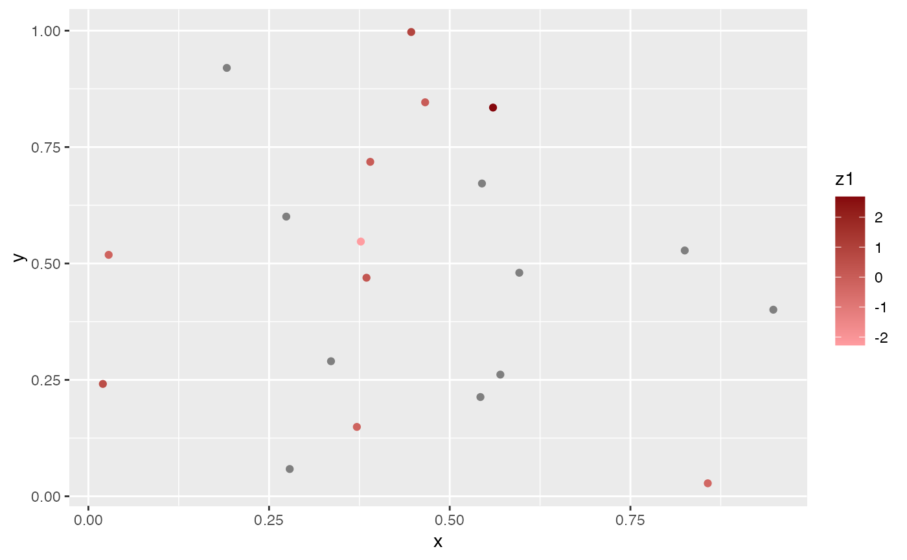
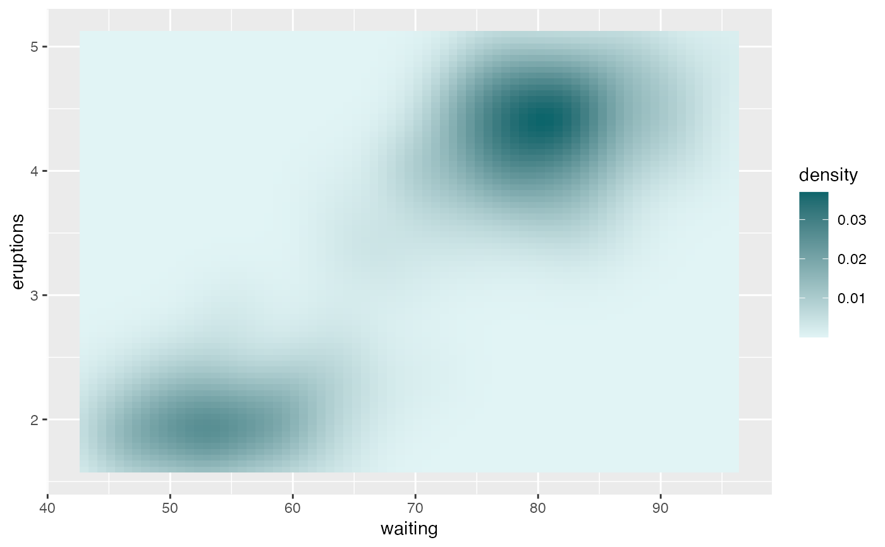

These create a gradient of colors based on the high and low value of a given hue from within the list of Sage branded colors.
scale_colour_sage_c( ..., option = "royal", low = NULL, high = NULL, na.value = "grey50", guide = "colourbar", aesthetics = "colour" ) scale_fill_sage_c( ..., option, low = NULL, high = NULL, na.value = "grey50", guide = "colourbar", aesthetics = "fill" )
| ... | Options passed to |
|---|---|
| option | One of the Sage colors. See |
| low | Colours for low and high ends of the gradient. |
| high | Colours for low and high ends of the gradient. |
| na.value | Colour to use for missing values |
| guide | Type of legend. Use |
| aesthetics | Character string or vector of character strings listing the
name(s) of the aesthetic(s) that this scale works with. This can be useful, for
example, to apply colour settings to the |
library("ggplot2") df_na <- data.frame( value = seq(1, 20), x = runif(20), y = runif(20), z1 = c(rep(NA, 10), rnorm(10)) ) ggplot(df_na, aes(x, y)) + geom_point(aes(colour = z1)) + scale_colour_sage_c(option = "apple")ggplot(faithfuld, aes(waiting, eruptions, fill = density)) + geom_tile() + scale_fill_sage_c(option = "powder")